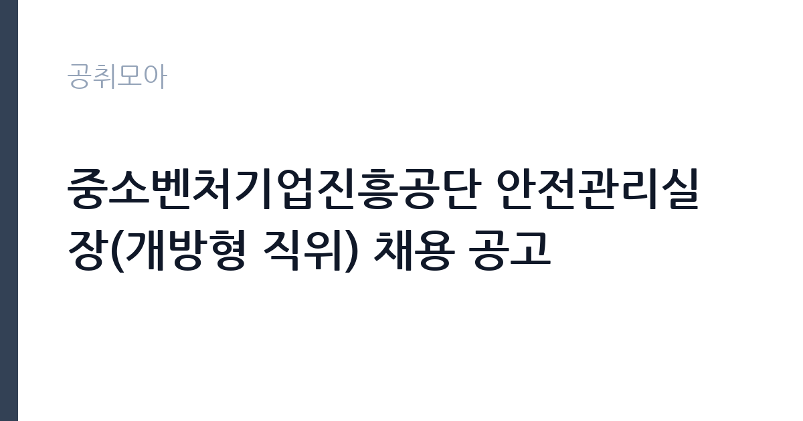

[공공기관] 중소벤처기업진흥공단 안전관리실장(개방형 직위) 채용 공고
중소벤처기업진흥공단 · 경남 · 마감 2026-10-30 (D-15) · 출처 잡알리오

한눈에 보는 모집 조건
| 기관 | 중소벤처기업진흥공단 |
|---|---|
| 공고명 | 중소벤처기업진흥공단 안전관리실장(개방형 직위) 채용 공고 |
| 고용형태 | 임기제 |
| 근무지 | 경남 |
| 게시일 | 2026-10-16 |
| 마감일 | 2026-10-30 (D-15) |
지원자격, 이렇게 읽으세요
- 공공기관 채용공시
- 세부 조건은 원문 공고문 확인
지원자격의 핵심은 자격증과 경력 두 가지입니다. 산업안전지도사와 건설안전기술사, 산업안전기사와 건설안전기사 중 1개 이상을 갖고 있으면서 산업안전보건법 시행령 제18조에 따른 안전 관련 업무 경력이 10년 이상이어야 합니다. 국가와 지자체, 공공기관과 민간에서의 안전 업무 경력이 모두 인정됩니다. 주의할 점은 민간 전문가 전담직위라 원서접수 마감일 기준 현직 공무원과 공공기관 재직자, 퇴직 후 3년 미만인 공직 경력자는 지원할 수 없다는 점입니다. 연령과 성별 제한은 없습니다.
이 공고의 포인트
이 공고의 매력은 공공기관의 안전 총괄 책임자급 자리라는 점입니다. 중진공은 전국에 연수원과 지역본부를 둔 조직이라 사업장 안전관리의 범위와 권한이 큽니다. 개방형 직위라 민간 전문가의 현장 경험을 살릴 수 있고 임기 동안 성과를 내면 이후 경력에 큰 자산이 됩니다. 경남 진주 본사 근무가 예상되므로 근무지 이전 가능 여부가 지원의 관건입니다. 안전 경력 10년 차 이상의 전문가라면 드문 기회이니 놓치지 마시기 바랍니다.
전형은 어떻게 진행되나
접수는 10월 30일 마감이며 세부 사항은 첨부 공고문에서 확인하셔야 합니다. 고위급 개방형 전형은 서류와 면접 외에 직무수행계획서와 정책 소견 심사가 포함되는 경우가 많으니 공고문의 전형 절차를 정독하시기 바랍니다. 경력증명서와 자격증 사본, 재직 증빙을 모두 갖춰야 하며 발급에 시간이 걸리므로 접수 막판을 피하시기 바랍니다. 임용 예정일이 12월 28일로 정해져 있어 합격 후 인수인계 일정도 빠듯할 수 있습니다.
원문에서 확인한 전형 방식
- 직무 관련 자격요건(자격, 경력) 外 연령, 성별 등 제한 없음 - 남성의 경우 병역필 또는 면제자 - 임용('26.12.28.) 즉시 근무가 가능한 자 - 「국가공무원법」 제33조(결격사유) 및 중진공 인사규정 제15조(채용결격사유)에 해당되지 않는 자 - 민간 전문가 전담직위이므로, 원서접수 마감일 기준 현직 공무원 및 공공기관 재직자와 퇴직 후 3년 미만인 공무원 및 공공기관 근무경력(개방형 계약직 등으로 채용된 경력은 제외)자는 지원 불가 - 원서접수 마감일 기준 다음 중 하나의 자격증 소지자로서, 「산업안전보건법 시행령」 제18조에 따른 안전관련 업무 경력 10년 이상인 자 * 자격증 : 산업안전지도사, 건설안전기술사, 산업안전기사, 건설안전기사 * 경력사항 : 국가 및 지방자치단체, 공공기관, 민간에서 안전관련 업무를 수행한 경력 ※ 상세내용 첨부 공고문 참조
이런 분께 추천해요
- 산업안전 분야에서 10년 이상 경력을 쌓은 베테랑 전문가께 적합합니다.
- 민간 기업의 안전관리 총괄 경험이 있고 공공기관으로 영역을 넓히고 싶은 분께 권합니다.
- 경남 진주 근무가 가능하고 조직의 안전 체계를 설계해보고 싶은 분께 잘 맞습니다.
지원 전 체크리스트
- 보유 자격증이 공고의 4종 중 하나에 해당하는지 확인했습니다.
- 안전 관련 업무 경력이 10년 이상임을 증빙 서류로 입증했습니다.
- 현직 공무원과 공공기관 재직자 지원 제한에 해당하지 않는지 확인했습니다.
- 첨부 공고문의 전형 절차와 제출서류를 모두 확인했습니다.
모집 일정과 제출 타이밍
공고 등록일은 10월 16일이며 접수 마감은 10월 30일로 2주 가량입니다. 경력증명서 발급과 직무수행계획서 작성에 일주일은 잡아야 하므로 접수 첫 주부터 움직이시기 바랍니다. 임용 예정일은 2026년 12월 28일이며 전형 단계별 일정은 원문 공고의 일정표를 따릅니다. 고위급 전형은 면접이 여러 단계일 수 있으니 일정을 비워두시기 바랍니다.
직무 이해하기: 공공기관
안전관리실장은 중진공 전체 사업장의 산업안전보건을 총괄하는 자리입니다. 중대재해처벌법 대응과 안전보건관리체계 운영이 핵심이며 전국 지역본부와 연수원의 위험성 평가와 안전점검을 지휘합니다. 안전사고 발생 시 원인 조사와 재발 방지 대책을 수립하고 경영진에 보고하는 책임도 집니다. 개방형 직위라 기존 관행을 답습하기보다 민간의 선진 안전관리 기법을 이식하는 역할이 기대되므로 취임 후 100일 계획 수준의 구상을 갖고 임하는 것이 좋습니다.
자기소개서 작성 팁
고위급 개방형 지원서에서는 직무수행계획서가 당락을 가릅니다. 중진공의 사업장 특성을 분석해 본인만의 안전관리 로드맵을 제시하시면 됩니다. 과거에 주도했던 중대재해 예방 성과는 재해율 감소 수치와 함께 쓰시고 조직 문화를 바꾼 경험을 곁들이시기 바랍니다. 민간 전문가로서 공공기관에 기여할 수 있는 차별점을 명확히 적으시면 설득력이 생깁니다.
면접 준비 포인트
면접에서는 안전관리 철학과 위기 대응 판단력을 묻습니다. 실제 사고 사례를 들어 본인이 내렸던 판단과 결과를 설명하시면 됩니다. 중대재해처벌법상 경영책임자와 안전관리자의 역할 분담에 대한 견해를 묻는 질문도 예상되니 법령을 정리해 두시기 바랍니다. 진주 본사 근무와 임기에 대한 질문에는 지원 의지를 분명히 밝히시는 것이 좋습니다.
급여·근무조건 읽는 법
이번 공고 요약에는 보수 금액이 공개되어 있지 않아 정확한 급여는 첨부 공고문에서 확인하셔야 합니다. 개방형 직위의 보수는 기관 보수규정과 협의에 따라 정해지며 직급 상당과 경력을 반영하므로 공고문의 보수 항목을 먼저 보시기 바랍니다. 참고로 공공기관 임원급과 실장급의 연봉은 알리오 경영공시에 기관별로 공개되니 중진공의 공시 자료를 함께 보시면 판단에 도움이 됩니다. 출처 없는 연봉 수치는 기재하지 않으며 경쟁률과 합격선도 공개되지 않았습니다.
자주 묻는 질문
- 공무원도 지원할 수 있나요?
지원할 수 없습니다. 민간 전문가 전담직위라 원서접수 마감일 기준 현직 공무원과 공공기관 재직자, 퇴직 후 3년이 지나지 않은 공직 경력자는 지원이 제한됩니다. 개방형 계약직 등으로 채용된 경력은 예외이니 원문에서 본인 해당 여부를 확인하시기 바랍니다. - 안전 경력 10년은 어떻게 산정하나요?
산업안전보건법 시행령 제18조에 따른 안전 관련 업무를 수행한 경력이 기준입니다. 국가와 지자체, 공공기관과 민간 경력이 모두 인정되며 증빙은 경력증명서로 하시면 됩니다. - 근무지는 어디인가요?
근무지역은 경남으로 안내되어 있으며 중진공 본사는 진주에 있습니다. 실제 근무 부서와 장소는 원문 공고와 합격 후 안내를 통해 확인하시기 바랍니다.
함께 보면 좋은 공고
[공공기관] 대한적십자사 재외동포지원본부 무기계약직 채용 공고 — 마감 2026-11-26[공공기관] [보훈교육연구원]일반기능직(시설기능/전기) 채용 — 마감 2026-10-30[공공기관] 한국석유공사 2026년 직원(기간제) 채용 공고 — 마감 2026-10-30출처: 잡알리오 공개정보를 바탕으로 공취모아가 정리한 안내글입니다. 모집 조건·일정은 변경될 수 있으니 지원 전 반드시 원문 공고문을 확인하세요. 본 글은 정보 제공용이며 합격을 보장하지 않습니다.